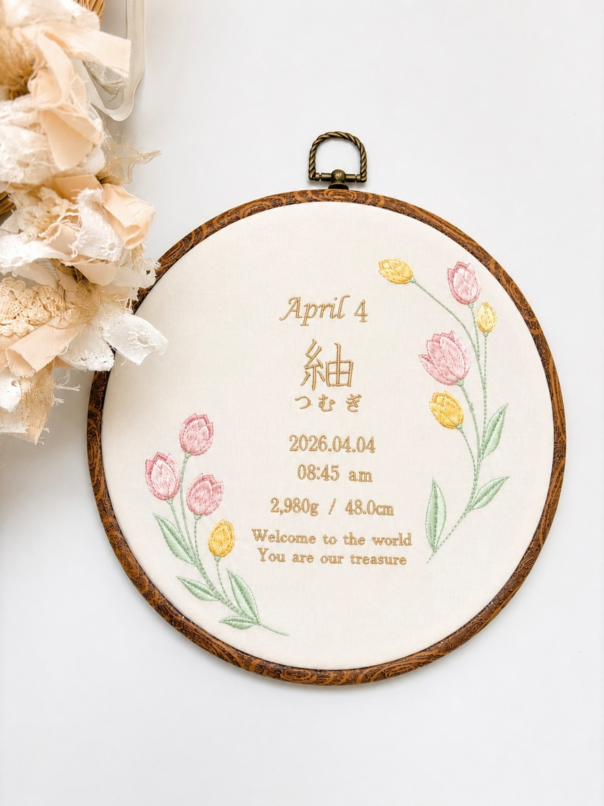
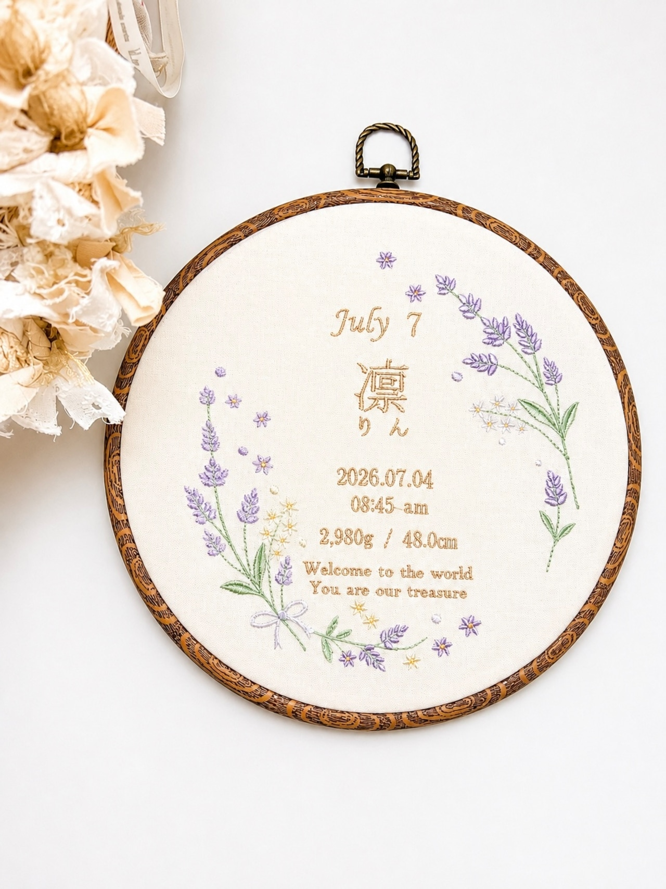

命名書に、
誕生花を添えるという選び方

命名書のデザインを選ぶとき、「誕生花」を添えるという選び方をご存知ですか？この記事では、誕生花の意味や由来から、命名書と組み合わせる魅力、そして誕生月のお花を刺繍でお入れする名入れ命名書までご紹介します。
誕生花とは？その由来
誕生花とは、1年の各月やその日ごとに割り当てられた「その時期を象徴する花」のこと。発祥は古代ギリシャ神話にあるといわれ、季節ごとに親しまれてきた花が、いつしか「その月の花」として定着したのがはじまりです。
実は誕生花は国や紹介するサイトによって少しずつ違いがあり、「これが絶対正解」という統一されたものはありません。それだけ多くの花が、それぞれの季節を象徴する存在として長く愛されてきたということでもあります。だからこそ、誕生花選びに厳密な決まりはなく、「この花が好き」という気持ちを大切に選んでいただいて大丈夫です。
命名書に誕生花を添える、という選び方
命名書のデザインは「なんとなく可愛いから」で選ぶのも素敵ですが、赤ちゃんが生まれた月の花を添えると、命名書に一段と特別な意味が加わります。
その子が生まれた季節、その時期に咲いていた花——命名書に添えることで、「なぜこの花にしたの？」と尋ねられるたびに、生まれた日のエピソードを語れる一枚になります。お子さまが大きくなって自分の命名書を見返したときにも、「自分の生まれた月の花なんだ」という物語が添えられているのは、ちょっと嬉しいものです。
lil iro babyの「誕生月の命名書」
lil iro babyでは、誕生月のお花を刺繍で添えた、円形フープの名入れ命名書をご用意しています。木目調の丸いフレームに、お花の刺繍とお名前をひと針ずつお入れする一点物です。
刺繍でお入れできる内容
・誕生月の英語表記（例：July 7）
・お名前（漢字＋ふりがな）
・生年月日（西暦・和暦どちらも対応）
・生まれた時間、体重・身長
・メッセージ（Welcome to the world など。日本語への変更も可能）
刺繍データは既製のテンプレートではなく、お花のモチーフから一点ずつ自分でデータを作成しています。同じお花でも試作をくり返しながら仕上げているので、既製品にはない風合いになっていると思います。

▲ 7月生まれ ラベンダー
誕生月のお花じゃなくても大丈夫
「うちの子の生まれた月がまだない」「誕生月のお花より、この花の方が好き」という方もご安心ください。誕生月以外のお花でも、ご希望のモチーフでお作りできます。お名前を伺うタイミングで、お好きなお花もあわせてご相談ください。
出産祝いのギフトにも
ご自宅用はもちろん、出産祝いとしても人気です。贈る相手の赤ちゃんが生まれた月の花を選べば、ありきたりではない特別な一品になります。お名前が決まればすぐに製作を始められるので、ご出産の報告を受けてからのオーダーでも間に合います。字体やレイアウトは、お作りする前にシミュレーション画像でご確認いただけるので、はじめての方も安心してオーダーしていただけます。
お届けまでの目安
・通常オーダー：ご注文から30日以内に発送
・それより早くご入用の場合も、製作のタイミングによっては対応できることがあります。ご注文前にお気軽にご相談ください。
誕生月のお花を添えて贈る、世界にひとつの命名書
view item命名書をいつまで飾るか迷っている方は、こちらのコラムもあわせてご覧ください。
← コラム一覧に戻る